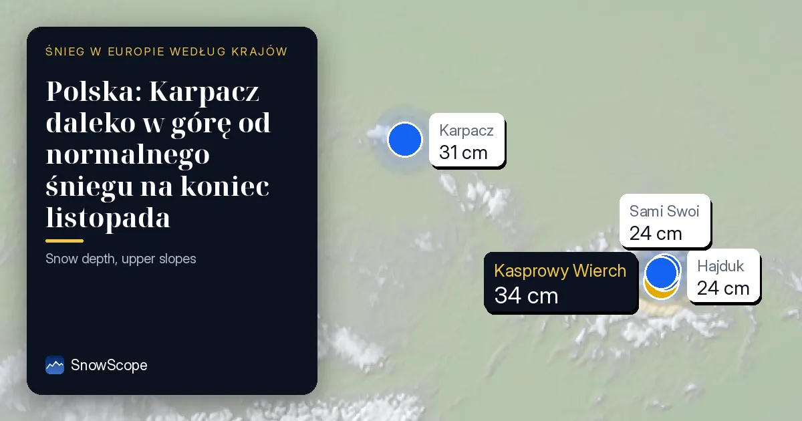
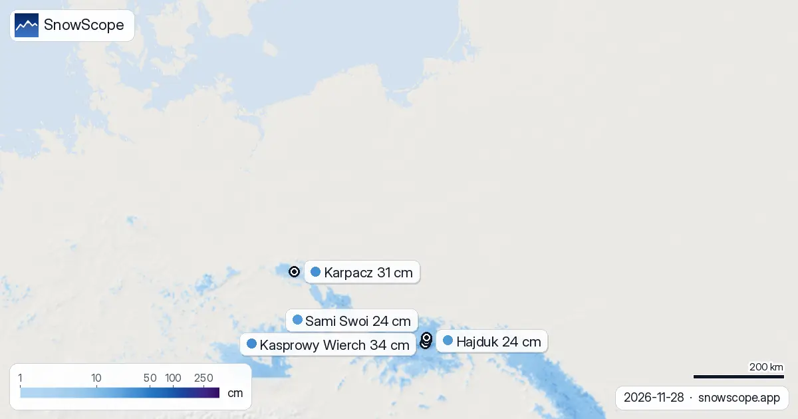

Polska: Karpacz daleko w górę od normalnego śniegu na koniec listopada
Góry Polski biją rekordy sezonu. Karpacz w Karkonoszach ma 31 cm śniegu—prawie trzy razy więcej niż zwyczajnie na koniec listopada—a cały kraj przeobrażył się w białą scenę w ciągu ostatniego tygodnia.
Zobacz prognozę śniegu dla Kasprowy Wierch w aplikacji SnowScopeGrubość śniegu, alerty i mapa 3D, za darmo.
Jak daleko w górę od normy jesteśmy?
Karpacz trzyma dziś 31 cm śniegu, 28 listopada. Normalnie na tę datę znaleźlibyśmy tu 11 cm. Resort osiąga 282 procent tego, co typowy koniec listopada przynosi. To nie wyjątek: Karpacz miał 31 cm w tym okresie roku, lecz tylko w najlepszych zimach w historii. Porównanie mówi jasno. Tydzień temu Karkonosze miały zaledwie 22 cm. To, co zmieniło się przez siedem dni, zmieniło całą sytuację dla Polski.
| Resort | Today | Normal for the date | Share of normal |
|---|---|---|---|
| Karpacz | 31 cm | 11 cm | 282 % |

Zwrot przyszedł szybko
Tydzień temu zaledwie 1210 km² Polski było białe. Dziś wszystkie 11 060 km² zmapowanego terenu pokrywa śnieg. To wzrost o 9850 km² w ciągu siedmiu dni—transformacja. Tatry na południu przewodziły zjawisku: 12 cm spadło tam w ostatnie 72 godziny. Kasprowy Wierch, najwyższy punkt zakresu na 1958 m, ma teraz 34 cm. Karkonosze na północy zyskały 9 cm w tym samym oknie, a Karpacz przybyło 5 cm tylko w ostatnie trzy dni.

Gdzie śnieg jest najgłębszy
Wysokość ma znaczenie, jak zawsze. Poniżej 500 m średnia głębokość śniegu to 7 cm i całkowicie pokrywa grunt. Między 500 a 1000 m znajdujesz 7 cm. Na wysokości 1000–1500 m głębokość sięga 10 cm. Powyżej 1500 m obraz się zmienia: śnieg leży średnio na 26 cm na wyższych stokach. Granica śniegu znajduje się teraz na 500 m, więc prawie wszystko ma białą czapkę. Najlepsze narciarstwo będzie na wysoko położonym terenie, gdzie fundament jest najgrubszy.
Co dalej
Następne trzy dni przyniosą Polsce mało nowego śniegu—nie więcej niż 0 cm. Ale spójrz dalej: między 3. a 7. dniem od teraz spodziewane są do 7 cm. Prawdziwe wydarzenie przyjdzie około 3–4 grudnia. Prognozy pokazują 4 cm przybycia 4 grudnia, a tydzień po tym (6–12 grudnia) może przynieść aż 27 cm. Ta druga fala śniegu utrwali solidny fundament sezonu na całych górach.
Stan ośrodków
Kasprowy Wierch prowadzi kraj z 34 cm, choć stracił 1 cm od wczoraj. Karpacz jest na drugim miejscu z 31 cm i bez zmian spodziewanych w następne trzy dni. Hajduk, Sami Swoi i Stacja narciarska Suche mają po 24 cm, każdy przybyło 6–7 cm w ostatnie trzy dni. Spośród 115 śledzonych ośrodków Polski, 104 ma mierzalny śnieg. Żaden ośrodek nie zyska nowego śniegu w następne 72 godziny, ale okres po tym znowu zmieni obraz.
Co to oznacza w praktyce
Śnieg sezonowy to cienki śnieg. Na 7–10 cm na stokach środkowych skalista podbudowa może jeszcze zaczepić nartę. Fundament w Karpaczu—na 1350 m—jest wystarczająco gruby do bezpiecznego narciarstwa, ale niższe tereny wymagają ostrożności. Stoki powyżej 1500 m to twój bezpieczny wybór na teraz. Sąsiednia Słowacja również jest biała, jej lider Vysoké Tatry ma 30 cm. Czechy są nieco w tyle: jej najwyższy punkt Náprava ma 29 cm i 78 procent pokrycia śniegiem. Trend w całym regionie jest taki sam: niezwykle silny początek sezonu.
Porady dla narciarzy
- Narciarstwo powyżej 1500 m, gdzie głębokość śniegu wynosi średnio 26 cm. Niższe stoki mają tylko 7–10 cm i mogą mieć odkryte łatki.
- Kasprowy Wierch (1958 m) i Karpacz (1350 m) to twoje bezpieczne wybory teraz dla konsekwentnego białego pokrycia.
- Następny znaczący śnieg przybywa około 3–4 grudnia i rośnie dalej w tygodniu 6–12 grudnia. Zaplanuj wizytę po tym oknie dla grubszego fundamentu.
- Śnieg sezonowy jest twardy i miejscami cienki. Przed zjazdem poza trasę zapoznaj się z oficjalnym biuletynem lawin dla Tatr i Karkonoszy.
- Wszystkie śledzone polskie ośrodki mają teraz śnieg, lecz głębokość się różni. Ośrodki powyżej 1350 m są najwiarygodniejsze tego tygodnia.
About these numbers
Resort snow depths are the deepest snow on the resort's upper slopes on the date shown; they are estimates for an area, not a measurement at one point. Forecasts can change. Always read the official avalanche bulletin before going off-piste.
Cite this report
For research, teaching or the press: the numbers and charts are free to reuse under CC BY 4.0 with this citation.
SnowScope (2026), Polska: Karpacz daleko w górę od normalnego śniegu na koniec listopada, https://snowscope.app/blog/pl/2026/11/poland-snow-ahead-of-normal-28-november-2026.html, accessed 2026-11-28
SnowScope (Atlas Labs). (2026, November 28). Polska: Karpacz daleko w górę od normalnego śniegu na koniec listopada. SnowScope snow reports. https://snowscope.app/blog/pl/2026/11/poland-snow-ahead-of-normal-28-november-2026.html
BibTeX
@misc{snowscope2026polandsnowaheadofnormal2,
author = {{SnowScope (Atlas Labs)}},
title = {Polska: Karpacz daleko w górę od normalnego śniegu na koniec listopada},
year = {2026},
month = nov,
howpublished = {\url{https://snowscope.app/blog/pl/2026/11/poland-snow-ahead-of-normal-28-november-2026.html}},
note = {Published 2026-11-28 12:18 UTC; accessed 2026-11-28}
}· CC BY 4.0 · Methods, data and tools →
Kasprowy Wierch: snow and temperature by height, this winter vs last (tools) →
Follow Kasprowy Wierch
Za darmo: wiadomość, gdy nadchodzi świeży śnieg, i prognoza co rano.